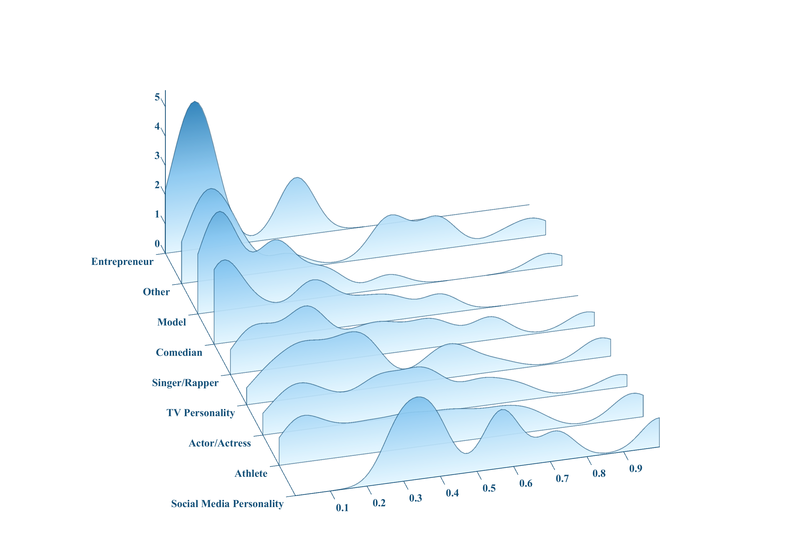
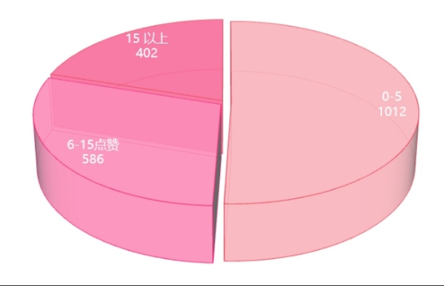
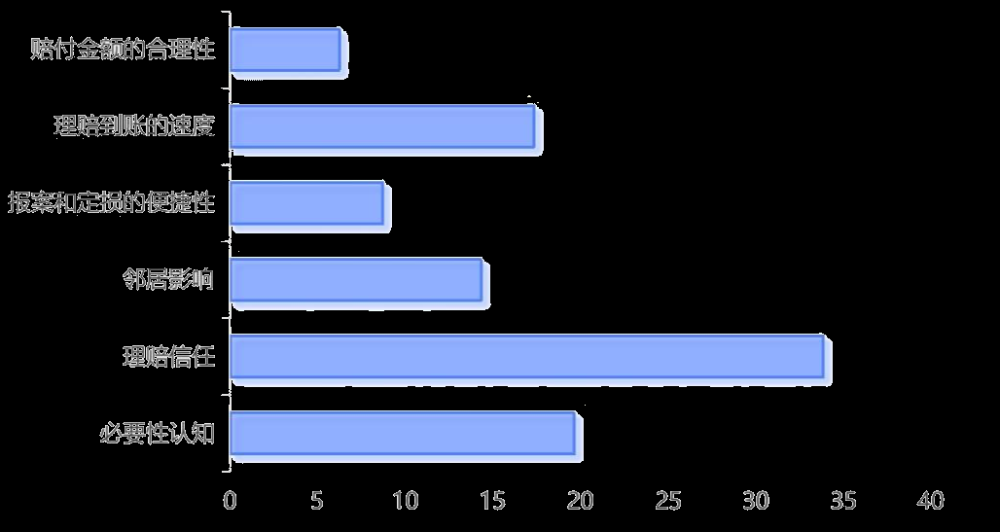

Data-driven projects and research

Reconstructed vote data from "Dancing with the Stars" using Python. Applied DSRF-SHAP analysis to reveal significant divergence between judge scoring and fan voting patterns, uncovering hidden biases in competition evaluation.

Conducted NLP processing on travel guide data to identify high-engagement content patterns. Used machine learning methods to extract key predictive factors that differentiate successful tourism guides from average ones.

Integrated multisource data streams to enhance typhoon warning systems. Applied Structural Equation Modeling (SEM) for empirical analysis of warning effectiveness and public response patterns.